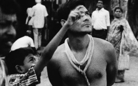

Fictitious Force
Philip Widmann – D 2015
15 min – 16mm – Benglai, engl. OmeU
B + S: Philip Widmann – K: Basab Mullik, Bernd Lützeler – T: Joydeep Dutta, Kunal Singh – SD: Roman Vehlken
"Diese Dinge geschehen nicht aus Zwang", sagt Observer A. "Oder durch den Willen von irgendjemandem", ergänzt Observer B. Ein Austausch über die Unmöglichkeit, Erfahrungen zu teilen.
montag 12 okt 22.30 uhr werkstattkino
Philip Widmann geb. 1980 in West-Berlin. Studium der Ethnologie an der Universität Hamburg und Visuelle Kommunikation an der HfbK Hamburg.
Filme (Auswahl) Destination Finale 2008 (4. UX) – Die Frau des Fotografen 2011 (mit Karsten Krause) – A/M, Spring Version 2012 – Szenario 2014 (mit Karsten Krause) (9. UX)